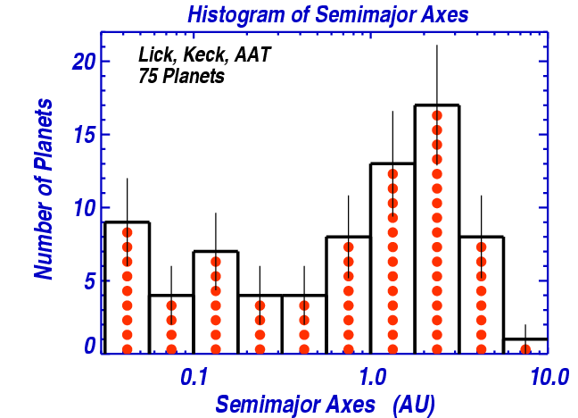

Semimajor Axes of Extrasolar Planets

Semimajor Axes of Extrasolar planets, from a survey
of 1300 FGKM main sequence stars within 50 pc of the Sun.
Survey was carried out with the Lick, Keck, and AAT telescopes
by the
Calif. & Carnegie Planet Hunting Team.
Return to planet-search home page...